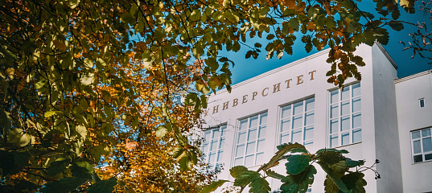

- это передовой научно-образовательный центр, расположенный в самом западном регионе России, это уникальная площадка для реализации смелых амбиций, формирования востребованных навыков и профессиональных компетенций. Успех наших студентов и выпускников базируются на интеграции науки и образования.
|
Мы консолидируем все возможные формы образования, предоставляем возможность выбора индивидуальных образовательных траекторий, учитывая собственное видение студентами своего профессионального будущего. |
 |
Мы используем технологии образования, ориентированные на индивидуальные потребности студентов, направлены на формирование профессиональных и личностных компетенций, необходимых для становления выпускника как полноценного и уникального специалиста. Наряду с классической лекционно-семинарской системой в образовательном процессе используются технологии геймификации и проектной деятельности, метод кейсов.